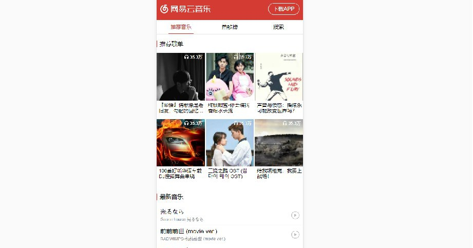

PC端音乐网站

项目简介：
本项目使用面向对象方法，通过jQuery实现以下功能： 初始化时随机播放音乐、在专辑栏展示由API获取的专辑信息、点击任意专辑即可随机播放本专辑下歌曲、上一曲、下一曲、暂停/播放、音量调节功能均可使用、展示当前音乐总时长及当前时间，拖动进度条可改变当前播放时间、展示歌词。
技术栈：
HTML 5+CSS 3+jQuery+AJAX+模块化+MVC
移动端网易云音乐

项目简介：
移动端具有音乐播放器的基本功能。本应用通过tabs的切换实现推荐音乐、热歌榜以及搜索功能的相互切换，同时完成了播放器页面的功能，此页面具有模拟唱片机播放的效果，以此展示歌曲封面，且实现了点击封面区域暂停/播放歌曲的功能。
技术栈：
HTML 5+CSS 3+jQuery+AJAX+LeanCloud+七牛+MVC
豆豆豆瓣电影

项目简介：
本项目要实现移动端仿豆瓣电影的单页应用，利用豆瓣提供的豆瓣电影API实现以下功能： 展示豆瓣评分排名前250的电影、展示北美电影排行榜、提供搜索电影功能，将搜索到的相关的电影展示出来、页面上所展示的电影条目都可以通过点击跳转到豆瓣电影的详细介绍。
技术栈：
HTML 5+CSS 3+jQuery+AJAX+MVC